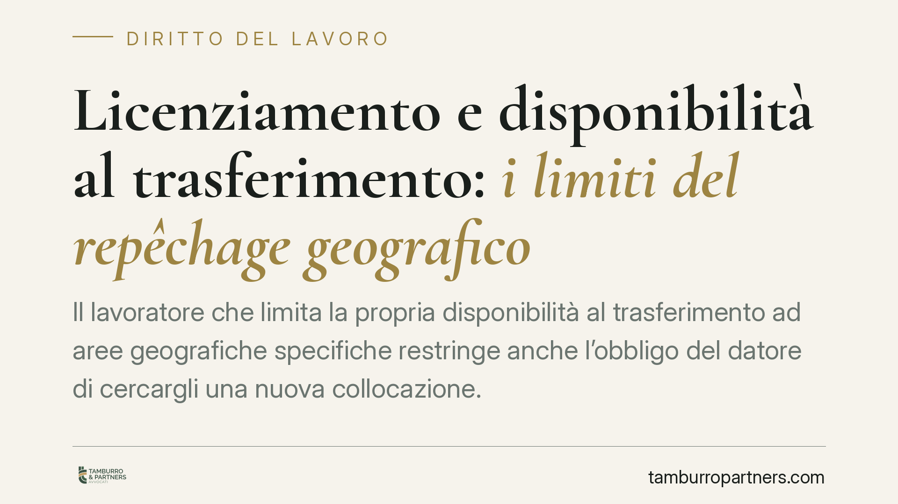

Licenziamento e disponibilità al trasferimento: i limiti del repêchage geografico
Il lavoratore che limita la propria disponibilità al trasferimento ad aree geografiche specifiche restringe anche l'obbligo del datore di cercargli una nuova collocazione. Lo ha precisato la Cassazione con la sentenza 7360/2021, incidendo sul cosiddetto repêchage e sulla legittimità del licenziamento per giustificato motivo oggettivo.

Il caso e la decisione
Nel giudizio definito dalla Cassazione (Sez. Lavoro, sentenza n. 7360/2021) si discuteva della legittimità di un licenziamento per giustificato motivo oggettivo, cioè il recesso legato a ragioni organizzative o produttive dell'impresa e non a colpe del dipendente.
Il punto controverso riguardava il cosiddetto repêchage (letteralmente "ripescaggio"): l'obbligo del datore di lavoro di verificare, prima di licenziare, se esistano posizioni alternative in cui ricollocare il lavoratore. La Corte ha affermato un principio netto: se il dipendente dichiara di essere disponibile al trasferimento solo verso determinate aree geografiche, il datore non è tenuto a dimostrare l'assenza di posti disponibili nelle sedi escluse. In quei luoghi, semplicemente, non c'è alcun obbligo di ricollocazione.
Inquadramento normativo
Il giustificato motivo oggettivo trova fondamento nell'art. 3 della legge n. 604/1966, che ammette il recesso per ragioni inerenti all'attività produttiva e all'organizzazione del lavoro. La giurisprudenza ha da tempo costruito attorno a questa norma l'obbligo di repêchage: il licenziamento è legittimo solo se non sia possibile adibire il lavoratore ad altre mansioni, anche inferiori (nei limiti dell'art. 2103 c.c., come riformato dal D.Lgs. 81/2015).
L'onere della prova grava sul datore di lavoro, che deve dimostrare l'effettiva soppressione della posizione e l'impossibilità di una diversa collocazione. La sentenza 7360/2021 delimita però questo onere: la prova va resa nel perimetro delle sedi alle quali il lavoratore si è dichiarato disponibile. La disponibilità ridotta del dipendente riduce, corrispondentemente, l'ampiezza dell'indagine richiesta all'impresa.
Implicazioni pratiche
La pronuncia ha effetti concreti per entrambe le parti del rapporto.
Per il lavoratore, una dichiarazione di disponibilità limitata può sembrare un modo per tutelare la propria vita personale e familiare. In realtà, restringe le possibilità di ricollocazione e, di riflesso, le difese contro un eventuale licenziamento. Escludere a priori le sedi distanti significa rinunciare a contestare la mancata ricerca di posti in quelle stesse sedi.
Per il datore di lavoro, la sentenza offre un criterio operativo più chiaro. L'obbligo di repêchage non è illimitato né indifferente alle scelte del dipendente: la verifica deve concentrarsi sulle aree effettivamente accettate. Resta però fermo l'onere di documentare con precisione sia la dichiarazione del lavoratore, sia l'esito dell'indagine sulle posizioni disponibili.
È bene ricordare che si tratta di un principio applicato a una vicenda specifica. La valutazione concreta dipende sempre dalle modalità con cui la disponibilità è stata espressa: una limitazione chiara e documentata pesa diversamente da una dichiarazione generica o estorta dalle circostanze.
Cosa fare in concreto
- Verificate per iscritto la disponibilità del lavoratore al trasferimento. Una dichiarazione orale o ambigua espone l'azienda a contestazioni sull'effettiva volontà del dipendente.
- Documentate l'indagine sul repêchage nelle sole sedi accettate. Conservate prova dell'assenza di posizioni compatibili in quelle aree, comprese eventuali mansioni inferiori.
- Lavoratori: valutate con attenzione prima di restringere la disponibilità. Una limitazione geografica può ridurre le tutele in caso di licenziamento; ponderate il bilanciamento tra esigenze personali ed effetti giuridici.
- Conservate ogni comunicazione tra le parti. Email, lettere e verbali sono spesso decisivi per ricostruire l'estensione dell'obbligo di ricollocazione.
- Richiedete una verifica preventiva della procedura. Sia prima di intimare un recesso, sia prima di sottoscrivere dichiarazioni che incidono sui propri diritti, è prudente un controllo della posizione.
La sentenza conferma un'idea di equilibrio: l'obbligo di repêchage non può essere preteso oltre i confini che il lavoratore stesso ha tracciato. Ma proprio per questo la chiarezza delle dichiarazioni e la cura documentale diventano l'elemento su cui si gioca la legittimità del licenziamento.
---
*Contributo informativo a cura di Tamburro & Partners - Avv. Giuseppe Tamburro. Non costituisce parere legale.*
Ogni storia di lavoro ha i suoi tempi.
Se gestisci HR e vuoi un confronto su contenzioso, ispezioni o licenziamenti, scrivi allo studio. Ti rispondiamo entro un giorno lavorativo.